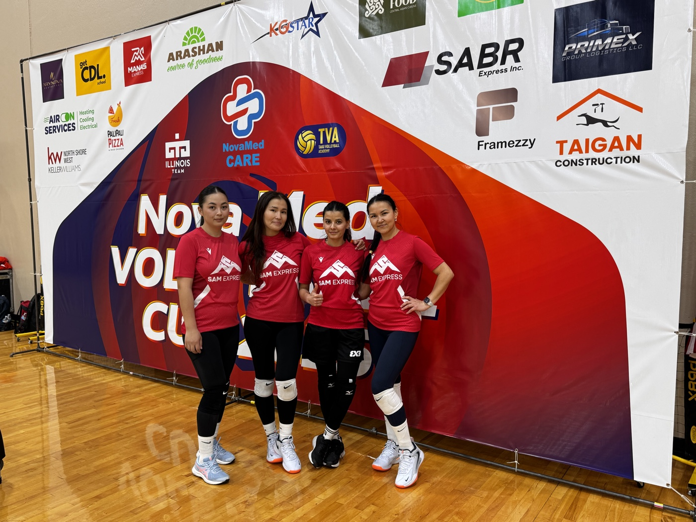

I build reliable cloud infrastructure — and the AI workflows that are changing how it gets built.
5+ years running cloud infrastructure and containerized platforms — AWS EKS, Kubernetes, GitOps, Terraform, Kafka, observability — most recently in financial technology, where infrastructure, delivery, and engineering workflows meet.
More recently: agentic AI as an engineering tool — Claude Code skills, MCP integrations, and AI-assisted workflows for Terraform, Kubernetes, and code review.
My approach is simple: automate what can be automated, understand what I'm automating, and never ship something I can't explain.
What I do
Eight things platform work is actually for — and the stack I do each of them with.
01
⚡
Stable, Fast Infrastructure
Production systems running 24/7 — nine EKS clusters across 15+ AWS accounts, the multi-account structure everything else sits inside. I carry the on-call rotation.
AWS
EKS
Terraform
VPC
Route 53
RDS
EC2
NAT Gateway
02
🚀
Deployment Automation
CI/CD from commit to production — tests, image builds, and versioned tags on every PR, then GitOps reconciliation with staged sync waves.
GitHub Actions
ArgoCD
Helm
Docker
Amazon ECR
03
👁️
Observability
Metrics, dashboards, and alerts that surface a problem before a user does — the layer that traced a Kafka consumer-lag incident to its actual bottleneck.
Datadog
Prometheus
Grafana
CloudWatch
04
📈
Auto-Scaling
Capacity that tracks demand — consumers scale on Kafka lag, nodes appear and retire as workload changes.
KEDA
Karpenter
EC2 Auto Scaling Groups
Kubernetes HPA
05
🔧
Developer Efficiency
One reviewable path to production for the whole team — golden-path Terraform templates, plus an AI reviewer that reads the ticket before the code across 100+ repositories.
ArgoCD app-of-apps
Helm
Claude Code
MCP
06
🛡️
Self-Healing Systems
Systems that recover without a page — KEDA scaling on Kafka lag since the last consumer-lag incident, so the pipeline handles the next spike on its own.
KEDA
Kubernetes
Karpenter
Strimzi
07
🔐
Security Posture
Secrets that never live in a manifest — pulled into pods at runtime, with access scoped to what each workload needs.
IAM
IRSA
AWS Secrets Manager
Secrets Store CSI Driver
08
🔄
Disaster Recovery
Scheduled backups across volumes, buckets, and databases — point-in-time recovery on PostgreSQL turns a bad write into a rollback, not an outage.
AWS Backup
EBS Snapshots
S3
PostgreSQL PITR
Also in the toolbox
Kafka
PostgreSQL
S3
Lambda
API Gateway
CloudTrail
CloudFormation
Gateway API
cert-manager
external-dns
Bash
Python
YAML
Selected work
Four pieces of work that say more about how I engineer than a stack list would.
By the numbers
5+Years in cloud & DevOps
100+Repos using AI PR review
~$9KMonthly EKS compute saved
30+Services on CI/CD
4Certifications, 2026
8EKS clusters on call for
Featured project
A GitOps streaming platform on AWS EKS
An event streaming platform on AWS EKS — relational data from Ruby and Go microservices and Lambdas, through Strimzi-managed Kafka, into PostgreSQL, the data warehouse, and operational securitization stores.
The incident: when Kafka consumers couldn't keep up
Consumer lag once became an incident — I traced it through Prometheus and Grafana to the consumers not keeping up with traffic, scaled them to recover, then added KEDA on Kafka lag so the pipeline handles the next spike on its own.
EKS
ArgoCD
Helm
Strimzi Kafka
KEDA
PostgreSQL
Prometheus
Networking
Migrating an EKS cluster to IPv6
The cluster could see almost everything — except GitHub.
The problem
During an IPv4 → IPv6 migration I owned end to end, ArgoCD suddenly stopped reaching GitHub.
The unexpected part
The cluster wasn't the root cause. GitHub publishes no AAAA record — so IPv6-only pods had no address to connect to. The failure looks like a cluster problem and isn't one.
The fix
DNS64 on the private subnets to synthesize AAAA records, and NAT64 through an AWS NAT Gateway to carry the traffic — the pattern AWS recommends for exactly this.
I enabled Karpenter consolidation to improve pod bin-packing and retire underutilized nodes — measured in AWS Cost Explorer, before and after.
Before
Node 1
Node 2
Node 3
Node 4
After
Node 1
Node 2
~$9K
Cut from the monthly EKS compute bill — about a fifth of it.
Same workloads, packed onto fewer nodes — Karpenter consolidates pods where they fit and retires the nodes that no longer earn their place.
Karpenter
EKS
AWS
Cost optimization
Agentic AI
An AI reviewer that reads the ticket before the code
Used across 100+ application and infrastructure repositories.
The problem
As the team adopted AI-assisted development, code volume went up — and human review became the bottleneck.
What I built
An AI PR-review agent on Anthropic's Claude Code GitHub Action — opens the linked Jira ticket, reads the PR against what it asked for, and flags requirement gaps and exposed secrets before a human looks. Advisory, not a merge gate; the review prompt is tuned per repository type.
AI isn't a chat window. I use Claude Code as an agent inside real repositories, not as a chat window on the side.
01
Context first
Most of the work is context, not prompting. The repository has to explain itself to the agent:
how modules are structured
deployment conventions
the promotion flow
what can be changed
what must never be touched
02
Live context over pasted context
This is what MCP changes. Instead of copying kubectl output into a prompt, I connect the agent to the cluster itself with read-only access — so it reads pod status, events, logs and resource usage directly, and can look but never touch.
"Why is this pod crashlooping?" stops being something I answer before asking it — the agent looks, correlates, and comes back with the trail it followed.
I plan with explicit checkpoints before anything gets changed, so I verify step by step instead of reviewing one enormous diff at the end.
Understand → Plan
↓
Checkpoint → Implement
↓
Verify → PR
↓
CI → Human Review
04
Guardrails
I treat an AI agent like a very fast junior engineer. Reading the cluster is a very different permission from changing it, and the two never get granted together by accident.
Enormous output. Needs guardrails. I'm accountable for everything that merges.
My rules for agentic infrastructure work
Branches, not production.
Pull requests, not direct changes.
CI must pass.
Permissions are scoped — read wide, write narrow.
Plans before execution.
Human accountability stays human.
Engineering principles
Automate the repeatable. If I have to do something twice, I start thinking about how to automate it.
Understand the system. Tools matter less than understanding how the pieces interact.
Optimize for the team. Infrastructure should make engineers faster, not add another layer of complexity.
Make failure useful. Incidents should produce better systems, not just closed tickets.
Don't ship what you can't explain. Especially when AI is involved.
I don't ship what I can't explain.
Resume
⌗
Experience
DevOps Engineer · Enova International
2024 — Present · Financial Technology · Chicago, IL
Replaced ticket-driven, hand-written Terraform and IAM setup with self-service golden-path modules across 15+ AWS accounts, built by a five-person platform team — provisioning dropped from ~2 weeks to under a day.
Stood up a Strimzi Kafka platform on EKS that took reporting and analytics queries off production PostgreSQL, ending their contention with application traffic, with KEDA auto-scaling consumers on lag.
Migrated 80+ Kubernetes applications from push-based Helm deploys to a pull-based GitOps path to production with ArgoCD.
Replaced ingress-nginx across nine EKS clusters with Gateway API, so application teams manage their own routes while the platform team keeps the shared Gateways.
Rebuilt an EKS cluster on Terraform to take its nodes off public IPv4 and onto private IPv6 subnets — DNS64/NAT64 kept ArgoCD delivering from IPv4-only GitHub the whole way through.
Automated first-pass PR review (Claude Code GitHub Action) across 100+ repositories — reviewed 300+ pull requests a week against Jira requirements, catching requirement misses and security issues before human review.
Built an MCP troubleshooting workflow that correlated Kubernetes, Datadog, and GitHub signals across all nine EKS clusters in place of checking each one by hand, cutting incident investigation from ~50 to ~10 minutes.
Carry the 24/7 production on-call rotation, one week in four, across a 9-cluster EKS estate.
Cloud Engineer · Sprout Social
2021 — 2024 · SaaS · Chicago, IL
Automated multi-account AWS provisioning with Terraform — dev, staging, prod and tooling each in its own account, so a change that broke one environment could not reach another.
Standardized GitHub Actions CI/CD across 30+ containerized services for 4 product teams — tests, Docker build and ECR publish on every pull request, so a service broke at review, not after merge.
Ran the ECR → Amazon EKS delivery path those services shipped through, coordinating each release with the product engineers who owned them.
Moved CI/CD authentication to GitHub OIDC federation — no long-lived AWS keys in repo secrets, IAM roles scoped per environment account.
Worked on the 8-person Tech Infrastructure team that owned the AWS, Kubernetes and CI/CD tooling the product teams built on.
✦
Certifications
AWS Certified Solutions Architect – Associate
Amazon Web Services · May 2026
Certified Kubernetes Administrator (CKA)
The Linux Foundation · May 2026
Certified Kubernetes Application Developer (CKAD)
The Linux Foundation · Apr 2026
HashiCorp Certified: Terraform Associate (004)
HashiCorp · Mar 2026
▤
Education
B.S. Applied Mathematics & Computer Science
Jusup Balasagyn Kyrgyz National University
Beyond the terminal
The part of the week that has nothing to do with a cluster.
🏐
Volleyball
I play indoor volleyball and regularly take private lessons to improve my skills. For me, volleyball is more than just a sport — it's a great reminder that, just like in engineering, strong teams depend on communication, trust, and knowing when to support each other.
🌎
Languages
I speak three languages. Less useful in a cluster than you'd hope. More useful on a team than you'd expect.
🔍
Curiosity
The rest of my curiosity tends to follow the work. I keep building agent skills for problems that don't strictly need them — mostly to find out where the approach breaks.

Tournament season
Home
Golden hour
Contact
Let's build something reliable.
I'm open to DevOps and Platform Engineering opportunities — and always happy to talk about cloud infrastructure, Kubernetes, GitOps, or where agents actually belong in an infrastructure workflow.